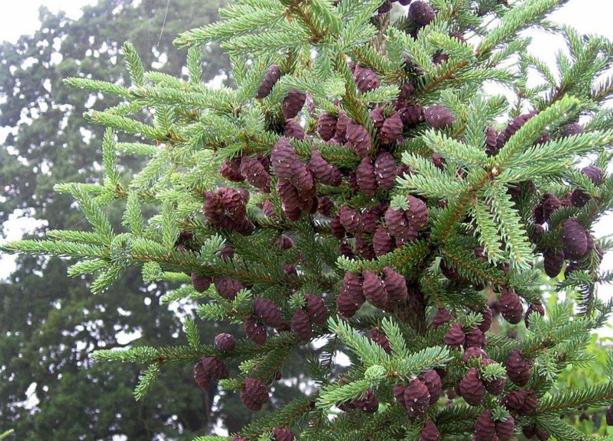

Вид происходит из Северной Америки. Границы естественного ареала — Аляска на западе и Ньюфаундленд на востоке; на севере территория распространения ограничена лесотундрой, на юге — штатами Миннесота и севером Мичигана. Вид встречается также в горных районах Нью-Йорка и в Аппалачских горах Новой Англии. Растёт большей частью в тайге; крайне редко, в южной части ареала, встречается в смешанных лесах[2].
Ель чёрная представляет собой вечнозелёное хвойное дерево. В зависимости от климатических условий, высота взрослых экземпляров — 7—15 м, диаметр ствола — 15—50 см. В благоприятных условиях встречаются деревья высотой около 30 м. Кора тонкая, серо-коричневая. Хвоя 6—15 мм длиной, сине-зелёная или зелёная. Шишки длиной 2,5—4 см и шириной 1—2 см, одни из наименьших среди елей, от красно-коричневого до фиолетового цвета.[4]
Как декоративные выращиваются в Европе с 1700 года, в России — с середины XIX века.[5] Культивируемые деревья обычно выше, с более пышной кроной, длинной хвоей и крупными шишками. Однако распространена и карликовая форма вида (Picea mariana Nana) высотой около 50 см.[6]В естественных условиях ель чёрная может создавать гибриды с наиболее близкими видами — с елью красной (Picea rubens) и реже с елью канадской или сизой (Picea glauca).
| Виды деревьев | Сухое/влажное | Вес на 1м^3 | Энергия на 1м^3 |
|---|---|---|---|
| Лиственница | Сухое | 540 | 2873 |
| Клен | 530 | 2820 | |
| Ель | 510 | 2713 | |
| Береза | 500 | 2660 | |
| Среднее | 525 | 2750 | |
Ель чёрная представляет собой вечнозелёное хвойное дерево. В зависимости от климатических условий, высота взрослых экземпляров — 7—15 м, диаметр ствола — 15—50 см.
Как декоративные выращиваются в Европе с 1700 года, в России — с середины XIX века.[5] Культивируемые деревья обычно растут быстро.
Однако распространена и карликовая форма вида (Picea mariana Nana) высотой около 50 см. Вид встречается также в горных районах Нью-Йорка и в Аппалачских горах Новой Англии. Растёт большей частью в тайге; крайне редко, в южной части ареала
В естественных условиях ель чёрная может создавать гибриды с наиболее близкими видами.